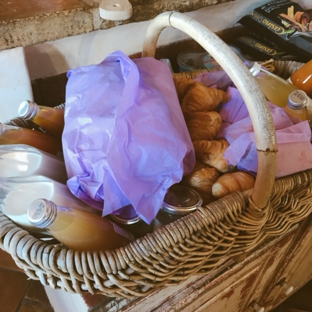

2020/0501Friご
5月ですね
じわりと梅雨に近づいてきてますが
雨の日に聞きたくなる曲や
映画ドラマアニメはなんですか？
教えてください☺︎
私は映像だと
" 恋は雨上がりのように "
" 海街diary "
" 耳をすませば "
" 言の葉の庭 "
は欠かせません!

そしてそして
カップスターさんの企画で
今日から毎月1話ずつ
" 乃木坂毎月劇場 " が公開されていきます!
東京03さんとオークラさん脚本で
やらせていただきました☺︎
ドラマ遊戯みたいにいかない 以来でしたが
やはり楽しい現場でした!
是非見てください☺︎

質問返し
やってみたかったバイトとか
仕事ってありますか？
→バイトはコンビニ、パン屋さん、
和菓子屋さん、ファミレス
仕事は保育士さん、化粧品販売員、
ウエディングプランナー、
芸能事務所の新人育成かな

ブログとかインスタとかにお料理
よく載せてるけど、
いつからお料理始めましたか？
あと、資格とか持ってますか？？
前から気になってたので！
わたしもおうちでみおなちゃん
の真似して作ってみます！
→高校で料理クラブに入ったり
授業で食物検定をとってから
ちゃんとしだしたかなぁ☺︎
中学の時は簡単な和食くらいしか
作れなかったけどお母さんに
教えてもらったりレシピ見ながら
レパートリーを地道に増やしています！笑
最近よく聴く曲教えて！
→ここ1週間で聴いた曲ランキング
そのまま載せますね
1 リッツパーティー / back numberさん
2 Beautiful / Wanna Oneさん
3 晴れた日に... / 久石譲さん
4 星のない世界 / aikoさん
5 最大公約数 / RADWIMPSさん
6 メッセージ / チャットモンチーさん
7 ブルー / フジファブリックさん
8 Blueming / IUさん
9 僕の名前を / back numberさん
10 西藤公園 / back numberさん
次あたりに明るい髪色にしたりしますかね？
→なんだかんだ暗髪気に入っていて...
でも気分で明るくする時もあるかも！
最近あった面白いエピソードは何ですか?
→家族でトランプのダウトをしたときに
お母さんがルール分かってなくて
全部の手持ちのカードを出して
ダウト！って言ったとき。笑
みんなで笑い転げました。笑
外国に住むならどこがいい？
→のんびりとしたヨーロッパがいいなぁ
ニースやコルシカ島に行って、
いつか住みたいなって思ったよ！
髪を染めようと思ってるんだけど
何色がいいと思いますか？男子です！
未央奈の意見を参考にしたいです(^^)
→私好みにしてくれるの？嬉しい♪
なんだかんだ黒髪が1番すきです！
四期生で1番仲良いのは誰？
三期生で1番仲良いのは誰？
→1番とかは無いかなぁ
れんか、しおり、与田ちゃんとは
仕事も一緒なことが多くて
合間に話すくらいかな！
もっとみんなと話したい〜☺︎はなそっと☺︎笑
髪の毛ボサボサのときとかないんですか
→寝癖つきやすくてよくメンバーに
いじられますよ
アーティスティックな寝癖らしい。笑
以上
ハワイで食べたステーキが美味しくて
いまとてもステーキが食べたいです

ではでは
2020/05/01 14:06
コメント(440)
ま、前髪あげてるカチューシャ未央奈やばいね。
ショートヘアと相乗効果で破壊力増しとると思うw
これは強い。
出来たら個人的にはモバメ限定にしてほしいけど、こういう良い写真はブログやインスタで公開してみんなに見てもらったほうがいいと思うなー。
っていう風に、勝手に思ってますごめんw
結局は未央奈次第だもんね！自由に！
あー、モバメ開いて衝撃うけた。
さて風呂入ろうw
ショートヘアと相乗効果で破壊力増しとると思うw
これは強い。
出来たら個人的にはモバメ限定にしてほしいけど、こういう良い写真はブログやインスタで公開してみんなに見てもらったほうがいいと思うなー。
っていう風に、勝手に思ってますごめんw
結局は未央奈次第だもんね！自由に！
あー、モバメ開いて衝撃うけた。
さて風呂入ろうw
堀ちゃん！更新ありがとう！
雨の日がこれから
多くなってくるね〜
ますますおうちで過ごす時間が
増えてくね〜
雨の日に聞きたくなる曲！
めちゃめちゃ古いけど
最後の雨♪とか
はじまりはいつも雨♪は
歌い手さんがめちゃめちゃ上手い人
達だから是非聴いて欲しい！
映画は雨に唄えばかな〜
動画も見たよ〜
東京03とのからみは
やっぱし面白い！笑
質問返しも待ってました！
アーティスティックな寝癖笑
髪の毛広がっちゃったりね笑
ロングの堀ちゃんもいいね〜
次回の更新も楽しみに待ってます！
では！
おやすみおな〜！
雨の日がこれから
多くなってくるね〜
ますますおうちで過ごす時間が
増えてくね〜
雨の日に聞きたくなる曲！
めちゃめちゃ古いけど
最後の雨♪とか
はじまりはいつも雨♪は
歌い手さんがめちゃめちゃ上手い人
達だから是非聴いて欲しい！
映画は雨に唄えばかな〜
動画も見たよ〜
東京03とのからみは
やっぱし面白い！笑
質問返しも待ってました！
アーティスティックな寝癖笑
髪の毛広がっちゃったりね笑
ロングの堀ちゃんもいいね〜
次回の更新も楽しみに待ってます！
では！
おやすみおな〜！
未央奈ちゃん。毎日ブログ更新ありがとう！５月は、私が一番好きな 月です。が が が・・・・今年は思いもよらぬ、厄介な「新型コロナウイルス」のため、そうもいきません。自粛期間も延長になりそうで、皆さんの自粛疲れが心配ですね。
香水って歌いーですよー
みおたんきゃわたん♡
めっちゃ偶然なんだけど、昨日家族でダウトやったー！笑
決着つかなすぎて、40分くらいやってたかも…
決着つかなすぎて、40分くらいやってたかも…
料理できる彼女はいいな〜♡︎
質問です！
好きなスポーツはなんですか？
見るのが好きなスポーツはなんですか？
教えてください！
質問です！
好きなスポーツはなんですか？
見るのが好きなスポーツはなんですか？
教えてください！
お薦めのアニメは、Re:ゼロから始まる異世界生活、僕だけがいない街、新世界よりです。未央奈ちゃんは、ホラーが好きだと聞いたので、この3作品を是非とも、観てください。
未央奈ーーー!!
更新ありがとーー!!
体調気を付けてね！
更新ありがとーー!!
体調気を付けてね！
更新頻度多くて最高です。
部活が引退かもしれません。
励ましてほしいです。
部活が引退かもしれません。
励ましてほしいです。
こんばんみーお♪
ブログありがとう！
雨の日に聴きたい曲
①『はじまりはいつも雨』
チャゲ＆飛鳥
②『Squall』
福山雅治
③『雨やどり』
さだまさし
かなぁ〜
チャゲ＆飛鳥は触れにくいよね〜笑笑
映画はなんやろ？
魔女宅とか
さびしんぼう
かなぁ〜
あ、さびしんぼう
久しぶりに観たくなってきた〜笑笑
心太
コロナの影響なのか、ネットで購入した
バッジを作る機械がなかなか届かない。。。
待ちどおしい。。。
いろいろ作って
いつか握手会で見せるね☆
ではは
わたる⊿
ブログありがとう！
雨の日に聴きたい曲
①『はじまりはいつも雨』
チャゲ＆飛鳥
②『Squall』
福山雅治
③『雨やどり』
さだまさし
かなぁ〜
チャゲ＆飛鳥は触れにくいよね〜笑笑
映画はなんやろ？
魔女宅とか
さびしんぼう
かなぁ〜
あ、さびしんぼう
久しぶりに観たくなってきた〜笑笑
心太
コロナの影響なのか、ネットで購入した
バッジを作る機械がなかなか届かない。。。
待ちどおしい。。。
いろいろ作って
いつか握手会で見せるね☆
ではは
わたる⊿
更新ありがとう！
かわいすぎてだいすき！！
おすすめのプチプラリップってありますか？？
かわいすぎてだいすき！！
おすすめのプチプラリップってありますか？？
乃木坂毎月劇場、見ましたよ。面白かった。
最近は、BiSHや緑黄色社会の歌をよく聴いてます。特に、Mela!なんかは、毎日のように。
最近は、BiSHや緑黄色社会の歌をよく聴いてます。特に、Mela!なんかは、毎日のように。
未央奈ちゃんこんばんは‼ありがとうございます‼頑張ります‼気をつけて下さい。大変ですね！頑張ります‼気をつけて下さい
未央奈ちゃんっ！ブログ更新ありがとうございます☺️
雨の日というか夏になってしまうけど、ひと夏の長さより...をよく聞きます☀️ワンレンロングの未央奈ちゃんはグッと大人っぽくなって美しいですね いつか見れるといいな...⸜❤︎⸝
自粛期間が終わったら私も暗髪に染めようと思うのですが、未央奈ちゃんはいつもどんなカラーで染めてますか？よかったら教えてください♪これからも応援してます！！
雨の日というか夏になってしまうけど、ひと夏の長さより...をよく聞きます☀️ワンレンロングの未央奈ちゃんはグッと大人っぽくなって美しいですね いつか見れるといいな...⸜❤︎⸝
自粛期間が終わったら私も暗髪に染めようと思うのですが、未央奈ちゃんはいつもどんなカラーで染めてますか？よかったら教えてください♪これからも応援してます！！
おすすめ映像ありがとう
見まーす
お寿司からの
未央奈ちゃんへのおすすめ映像は、
V6岡田 准一さん
主演の ザ・ファブル
カッコいいし笑い有り
めちゃおすすめです。
では自宅待機楽しみましょう
耳をすませば一番好きです映画で!
好きな男子の髪型の種類を教えてください 未央奈さんの意見が気になります。
飛鳥ちゃんとのGRLオフショとても可愛かったです！
あしゅみおなのエピソード聞きたいです＼(^-^)／
あしゅみおなのエピソード聞きたいです＼(^-^)／
こんばんは♡
もう5月に入りましたね～
今日も夏日みたいだったけど、
雨の日の映像リスト素敵です☆
音楽もいっぱい聴いてますね！
家族でトランプも素敵ですよ✨
お家でお料理も良いですよね！
髪の毛ボサボサも見たいです♪
乃木坂毎月劇場も楽しいですね！
シュールな役柄も似合いますよ✌
ブログ写真でも元気出ました♡☺
もう5月に入りましたね～
今日も夏日みたいだったけど、
雨の日の映像リスト素敵です☆
音楽もいっぱい聴いてますね！
家族でトランプも素敵ですよ✨
お家でお料理も良いですよね！
髪の毛ボサボサも見たいです♪
乃木坂毎月劇場も楽しいですね！
シュールな役柄も似合いますよ✌
ブログ写真でも元気出ました♡☺
こんばんはお疲れさま☺
今日から５月やね～✨
うちらはクールビズでネクタイない分気持ち楽なシーズンとなりました☺
暑いね(笑)～✨
仕事と休みの毎日で少しくたくたかな(笑)
雨の日に聴きたい曲？
雨の日観たい映画？
なんやろか～
今は確かに曲聴いて癒されてるよ☺
勿論乃木坂の曲もね。
6月は誕生月やから個人的には好きです☺
雨の日かあ～✨
ベタになら晴れたらいいね☺
ドリカムさんならサンキュも好きやな！
考えたら沢山浮かぶね(笑)
映画はやはり君に届け。
和菓子屋さんでバイトしとう堀ちゃんの店に行ってみたいです。
ではではまたね☺
写真集発売楽しみやね☺
ではではまたね☺
体調ホンマに気をつけてくださいね☺
ほなね、堀ちゃん☺
今日から５月やね～✨
うちらはクールビズでネクタイない分気持ち楽なシーズンとなりました☺
暑いね(笑)～✨
仕事と休みの毎日で少しくたくたかな(笑)
雨の日に聴きたい曲？
雨の日観たい映画？
なんやろか～
今は確かに曲聴いて癒されてるよ☺
勿論乃木坂の曲もね。
6月は誕生月やから個人的には好きです☺
雨の日かあ～✨
ベタになら晴れたらいいね☺
ドリカムさんならサンキュも好きやな！
考えたら沢山浮かぶね(笑)
映画はやはり君に届け。
和菓子屋さんでバイトしとう堀ちゃんの店に行ってみたいです。
ではではまたね☺
写真集発売楽しみやね☺
ではではまたね☺
体調ホンマに気をつけてくださいね☺
ほなね、堀ちゃん☺
未央奈ちゃん、今回載せた写真の中で一番下の写真が
1番綺麗に写ってる

髪の毛の明るさは、今くらいの明るさがちょうど良いと思うよ！！ 明るく染めすぎるよりも今くらいの明るさの方が男女のファンとも好印象に感じると思うよ
乃木坂毎月劇場はチャンネル登録したから、時間がある時に視聴するね 俺は乃木坂デザインのカップースター買ったとき、蓋の裏側に未央奈ちゃんサイン入りが当たって保管してるよ！！
1個購入して当たった
ではでは
1番綺麗に写ってる
髪の毛の明るさは、今くらいの明るさがちょうど良いと思うよ！！ 明るく染めすぎるよりも今くらいの明るさの方が男女のファンとも好印象に感じると思うよ
乃木坂毎月劇場はチャンネル登録したから、時間がある時に視聴するね
1個購入して当たった
ではでは
お料理始めようと思うんだけど、堀ちゃんおすすめのキッチングッズとかありますか？？
みおな、こんばんは！更新ありがとう。近況報告、質問返しありがとうございます。 では、毎日みおなに良いこと沢山ありますように！ おやすみおな！！
更新ありがとう
最近モバメも多くて嬉しいです
最近モバメも多くて嬉しいです
乃木坂毎月劇場、未央奈ちゃんの設定は、マイペースだとか。
ピッタリですね(笑)。
最後のショットは、韓国風メイクかな？
IZ*ONEさんにいても、おかしくなさそうな雰囲気ですね♪☆
ピッタリですね(笑)。
最後のショットは、韓国風メイクかな？
IZ*ONEさんにいても、おかしくなさそうな雰囲気ですね♪☆
ブログ更新ありがとうございます！
応援してます！！
エルビンビショップの Fooled Around And Fell In loveとシャナイアトゥエインのUP!
って曲雨の日や気分が下がる時に聴きたい良い曲ですよーー
応援してます！！
エルビンビショップの Fooled Around And Fell In loveとシャナイアトゥエインのUP!
って曲雨の日や気分が下がる時に聴きたい良い曲ですよーー
お疲れ様です!
スキマスイッチの晴れ時々曇り
更新待ってました!!
スマホの充電が切れちゃって
コメント遅れちゃった…
私も料理クラブ入ってた〜
小学校の時だけど
未央奈ちゃんの1週間
聴いた曲、勉強中とかに
聴いてみるね!!
次の更新も待ってます( ¨̮ )
スマホの充電が切れちゃって
コメント遅れちゃった…
私も料理クラブ入ってた〜
小学校の時だけど
未央奈ちゃんの1週間
聴いた曲、勉強中とかに
聴いてみるね!!
次の更新も待ってます( ¨̮ )
未央奈〜久しぶりにコメントします〜！！
今日Netflixでなんか無いかな〜って探してたら
未央奈の愛してやまないジェイソン・ステイサムさんの出演してる
デスレースって映画があったから観てたよ！
未央奈は見たことあるかな？
オススメしときます(笑)
でわ
今日Netflixでなんか無いかな〜って探してたら
未央奈の愛してやまないジェイソン・ステイサムさんの出演してる
デスレースって映画があったから観てたよ！
未央奈は見たことあるかな？
オススメしときます(笑)
でわ
未央奈ちゃん！
ブログ更新ありがとう！
カップスター劇場見たよ！
期待を裏切る事無く、笑わせてもらいました！
未央奈ちゃんのやる事すべて新鮮に感じます！
これからも応援しているよ☺️☺️
ブログ更新ありがとう！
カップスター劇場見たよ！
期待を裏切る事無く、笑わせてもらいました！
未央奈ちゃんのやる事すべて新鮮に感じます！
これからも応援しているよ☺️☺️
アニメ、ガールズバンド、ポッピンパーティが好き。
すごく楽しい曲です。すごく熱くなれる曲です。オススメ
乃木坂の楽曲も好き。アナスターシャ、毎日聴いています。すごく心に刺さる曲です。堀未央奈ちゃん、これからも乃木坂のてっぺん目指して頑張って下さい。楽しいブログありがとー。
すごく楽しい曲です。すごく熱くなれる曲です。オススメ
乃木坂の楽曲も好き。アナスターシャ、毎日聴いています。すごく心に刺さる曲です。堀未央奈ちゃん、これからも乃木坂のてっぺん目指して頑張って下さい。楽しいブログありがとー。
未央奈お疲れ様(*´∀｀)ノ僕も雨の日に観たいのは恋は雨上がりのようにだね後はとなりのトトロのシーンで妹メイとトトロがバス停に一緒に並ぶシーンが好きかな雨降ってるね～(笑)聴きたくなる曲は恋は雨上がりのようにEDAimer Ref:rain秦基博言ノ葉かなただあまりに長雨続くと憂鬱になるね～(笑)止んでくれ～って(笑)未央奈はステイホーム続いて外に出れないからかなり辛いと思うけどくれぐれも体調には気を付けてね
髪を染めるのに黒がいいっていうあたりやっぱり未央奈だなぁって思ってしまいました笑
『Bed Time Stories／大江千里』が好きです。
雨とは直接関係ない曲ですが、急に聴きたくなるときがあるんです。
雨とは直接関係ない曲ですが、急に聴きたくなるときがあるんです。
未央奈～！
今日もありがとう☺️
疲れてた心が癒された…！
今日もありがとう☺️
疲れてた心が癒された…！
未央奈ちゃん！
今日も更新ありがとね～
「乃木坂毎月劇場」見ましたよぉ～
メッチャ、メッチャ面白かった！
あっという間の１５分でした。 ２話には出るのかなぁ～？
ところで質問です。
未央奈のあのセリフは台本にあるセリフなんですか？
それともアドリブ？
台本通りだとすると、未央奈の活かし方を良く理解
しているライターさんなんですね（笑笑笑）
とても面白かった。 笑った、笑った、芝居も上手い！
やっぱ未央奈のセリフが一番笑えた。ワハハ
でもｍｏｕｓｅと言い、今回のドラマと言い未央奈の
キャラはすっとぼけた？キャラに定着しているんだね。
・・・乃木坂４６ＳＨＯＷのオープニングコントの
時からそうだけど（笑笑）
雨の日に聞きたくなる、観たくなる曲もドラマ、アニメ
も今まで特に無いんだけど・・・
雨の日には窓から降ってる雨を見てるのは好きです。
また、雨の音もとても好きです。
ぴちょん、ぴちょんと落ちる雫から、地面を叩きつける
様、豪雨の中窓を叩きつける様、水溜りに落ちて波紋が
広がる様、波紋同士が幾重にも交わったりする様・・・
どれもこれも只々見続けてたり、音を聞き続けたりして
いるのが好きです。 理由は分かりません。あはは(笑)
変でしょうか？・・・いや変ですよね(笑)
でも雨の日は嫌いなんです。 特に外出しなければ
ならないなんて事になったら最悪です。
災害レベルにでも発展したら被災の方々が気になる。
あと雨の日の特に梅雨や台風のムシムシ感は大嫌いです。
あっ、傘に当たる雨の音も好きじゃないです。
お肉・・ステーキですか。 旨そうですね。
今食べるなら、ヒレですか？ サーロイン？ はたまた
リブロース？ Ｔボーン？
自分はヒレですかねぇ～ サーロインも捨てがたい！
実はリブロースとＴボーンは食べた事がありません。
えっと・・神戸に来た時神戸ステーキ食べましたか？
こちらは自分、食べた事があるのですがメッチャ
美味しかったです。
あっ、好きな焼き方はなんですか？
ところで・・・
料理が好きと言う貴方を知って、もっと好きになり
ました。 すてきですねぇ～ 一緒に料理がしたいです。
たいした物は作れませんが日常食べる簡単な物なら
料理します。
ハンバーグ、筑前煮、オムレツ、おでん・・(笑)
それにしても学生時代から料理クラブに食物検定・・
・・・凄いです。
食へののめり込み方が本気なんですね(笑)
白ワイン、イイですよねぇ～。 一緒に飲みたい！
ん？・・白ワインですよね？ 違う？
ワインなら自分は俄然白ワイン派です。 シャンパンも
大好きです。
あと割と辛口派です。 甘いのも好きですよ。
未央奈は赤白どっち派？ 甘口、辛口どっち派？
そもそもワイン好きですか？（笑笑）
最後に、今日の未央奈の視線の先は何ですか？
Ｖサインに意味はありますか？
ではは
今日も更新ありがとね～
「乃木坂毎月劇場」見ましたよぉ～
メッチャ、メッチャ面白かった！
あっという間の１５分でした。 ２話には出るのかなぁ～？
ところで質問です。
未央奈のあのセリフは台本にあるセリフなんですか？
それともアドリブ？
台本通りだとすると、未央奈の活かし方を良く理解
しているライターさんなんですね（笑笑笑）
とても面白かった。 笑った、笑った、芝居も上手い！
やっぱ未央奈のセリフが一番笑えた。ワハハ
でもｍｏｕｓｅと言い、今回のドラマと言い未央奈の
キャラはすっとぼけた？キャラに定着しているんだね。
・・・乃木坂４６ＳＨＯＷのオープニングコントの
時からそうだけど（笑笑）
雨の日に聞きたくなる、観たくなる曲もドラマ、アニメ
も今まで特に無いんだけど・・・
雨の日には窓から降ってる雨を見てるのは好きです。
また、雨の音もとても好きです。
ぴちょん、ぴちょんと落ちる雫から、地面を叩きつける
様、豪雨の中窓を叩きつける様、水溜りに落ちて波紋が
広がる様、波紋同士が幾重にも交わったりする様・・・
どれもこれも只々見続けてたり、音を聞き続けたりして
いるのが好きです。 理由は分かりません。あはは(笑)
変でしょうか？・・・いや変ですよね(笑)
でも雨の日は嫌いなんです。 特に外出しなければ
ならないなんて事になったら最悪です。
災害レベルにでも発展したら被災の方々が気になる。
あと雨の日の特に梅雨や台風のムシムシ感は大嫌いです。
あっ、傘に当たる雨の音も好きじゃないです。
お肉・・ステーキですか。 旨そうですね。
今食べるなら、ヒレですか？ サーロイン？ はたまた
リブロース？ Ｔボーン？
自分はヒレですかねぇ～ サーロインも捨てがたい！
実はリブロースとＴボーンは食べた事がありません。
えっと・・神戸に来た時神戸ステーキ食べましたか？
こちらは自分、食べた事があるのですがメッチャ
美味しかったです。
あっ、好きな焼き方はなんですか？
ところで・・・
料理が好きと言う貴方を知って、もっと好きになり
ました。 すてきですねぇ～ 一緒に料理がしたいです。
たいした物は作れませんが日常食べる簡単な物なら
料理します。
ハンバーグ、筑前煮、オムレツ、おでん・・(笑)
それにしても学生時代から料理クラブに食物検定・・
・・・凄いです。
食へののめり込み方が本気なんですね(笑)
白ワイン、イイですよねぇ～。 一緒に飲みたい！
ん？・・白ワインですよね？ 違う？
ワインなら自分は俄然白ワイン派です。 シャンパンも
大好きです。
あと割と辛口派です。 甘いのも好きですよ。
未央奈は赤白どっち派？ 甘口、辛口どっち派？
そもそもワイン好きですか？（笑笑）
最後に、今日の未央奈の視線の先は何ですか？
Ｖサインに意味はありますか？
ではは
今さらですが、
ブログのタイトル部分の日付の長さが
タイトルの長さによって伸び縮み
していることに気がつきました
紫のとこね
何かメンバーそれぞれのパワーゲージを
表してるみたいで面白いね
と、クソほどどーでもいい情報でした
そこで改めてブログをみて
思ったのですが
コメント欄に太文字とか斜文字とか
打てればいいのになって
重要なことを強調したいときとかにさ
まぁ(´･ω･｀)知らんがな
が重要なことを言うことはないけどさ
お家での生活はいかがですか？
不自由ないですか？
(´･ω･｀)知らんがな
はヒマしてますよ
だから
なんか面白いことして
とんでもない無茶ぶりw
ブログのタイトル部分の日付の長さが
タイトルの長さによって伸び縮み
していることに気がつきました
紫のとこね
何かメンバーそれぞれのパワーゲージを
表してるみたいで面白いね
と、クソほどどーでもいい情報でした
そこで改めてブログをみて
思ったのですが
コメント欄に太文字とか斜文字とか
打てればいいのになって
重要なことを強調したいときとかにさ
まぁ(´･ω･｀)知らんがな
が重要なことを言うことはないけどさ
お家での生活はいかがですか？
不自由ないですか？
(´･ω･｀)知らんがな
はヒマしてますよ
だから
なんか面白いことして
とんでもない無茶ぶりw
未央奈ちゃん大好き
ブログ更新、感謝です♪
堀さんのブログは、写真も多くて嬉しいです。
「乃木坂毎月劇場」っ！
楽しかったぁ…。
やっぱり、乃木坂ちゃんと芸人さんとの絡みは、
ピカイチですねっ！
しかも、芸人さんは、大好きな「東京03」。
本当に最高でした。
そして、雨の日に観たいアニメ。
「言の葉の庭」
これ、すごくわかります。
世界観がとても魅力的で、大好きなんです。
と、云うことで…
雨の日に聴きたい曲を紹介させていただきます。笑
氷室京介
「RAINY BLUE」
「STORMY NIGHT」
「魂を抱いてくれ」
X (X JAPAN)
「ENDLESS RAIN」
全曲、バラードになっちゃいましたが、
僕なりに、雨の日にピッタリだなぁ…
と、思いまして。
機会があれば、是非。
それに、堀さんのウィークリーランキングっ！
とても素敵なアーティストばかりで、すごく参考になりました♪
非常事態宣言も延長の見通しで、
もう少しだけ、みんなで頑張らないといけませんが、
この期間を大切にしたいと思っています。
堀さんもお身体だけは、ご自愛ください。
それでは、また楽しみにしています！
いつもブログをたくさん挙げてくださって、
ありがとうございます♪
～雨の日に聞きたくなる曲～
稲垣潤一さんの「ドラマティック・レイン」はぜひ押さえておきたい一曲
有名な曲ですが何より作詞をされた秋元康先生にとって初の大ヒット作品
情緒あふれるラブソングで好きです
梅雨時の映画で真っ先に思い浮かぶのは、竹内結子さん中村獅童さん主演の『いま、会いにゆきます』です。
ぜひチェックしてみてください(^^)
ぜひチェックしてみてください(^^)
未央奈ちゃん。毎日ブロブ更新ありがとう！カウンター席に座って、ワイングラス片手に、、、、、絵になりますネ。様になっております。ステーキ う～ん わたしは、西の人なので、神戸牛 まず頭に思い浮かびますが・・・・でも余りなじみがなく、どちらかと言えば 松阪牛の方がなじみがあり何回か頂きました。三重県なので、比較的未央奈の岐阜県に近いので、ご存知かも知れませんが、「和田金」・「一升びん」が有名で物凄くおいしいです。代金もそれなりの値段しますが・・・。お薦めです。
堀ちゃん、こんばんは。
僕は、雨の日には音楽を聴くよりも雨の音を聞くほうが好きかな♪
雨の音を聞きながら何か作業をしたりして
雨の日って出掛けるのが億劫になるけど、そんな日にはそんな日の楽しみ方っていうものがあるんだよね。
あと、夜に窓を開けたりすると、ゴォォーっていう遥か遠くで車が走る音なんかが聞こえたりするんだけど、そういうのがわりと好き
「音」といっても、心地いい音とそうでない音ってあるものだよね。
・・・音について語りました。
僕は、雨の日には音楽を聴くよりも雨の音を聞くほうが好きかな♪
雨の音を聞きながら何か作業をしたりして
雨の日って出掛けるのが億劫になるけど、そんな日にはそんな日の楽しみ方っていうものがあるんだよね。
あと、夜に窓を開けたりすると、ゴォォーっていう遥か遠くで車が走る音なんかが聞こえたりするんだけど、そういうのがわりと好き
「音」といっても、心地いい音とそうでない音ってあるものだよね。
・・・音について語りました。
大好きな未央奈ちゃんこんばんは!乃木坂毎月劇場見たよ!未央奈ちゃんの存在感が凄くあって面白かったよ!私の雨の日に聞きたくなる曲は、ZYYG REV ZARD WANDS featuring 長嶋茂雄の雨に濡れてです。後は、ｼﾞｯﾀﾘﾝｼﾞﾝの相合い傘です。
未央奈にむちゅ～
未央奈ちゃんフジファブリックきくの！！！私もブルー大好き嬉しい
いつも、ブログ更新、ありがとうございます。

今回のブロブに綴ってあった、｢晴れた日に...｣を聴きながら読んでいます。
気持ちが落ち着きますね。とても素敵な曲です。
毎日お家での生活が続いていますが、いつか握手会やライブで堀さんに会えるのを楽しみにしています。
今回のブロブに綴ってあった、｢晴れた日に...｣を聴きながら読んでいます。
気持ちが落ち着きますね。とても素敵な曲です。
毎日お家での生活が続いていますが、いつか握手会やライブで堀さんに会えるのを楽しみにしています。


雨の日に聴きたい曲は
THE YELLOW MONKEYの花吹雪
見たい映像は
嫉妬の権利のMV
となりのトトロ
トトロってなんか雨のイメージがあります。
カップスターの動画今から見るよ〜
質問返しありがとう。
またやってくださいね。
あと4枚目の画像の堀ちゃん何飲んでるんですか？
ワイン？シャンパン？
ではまた！